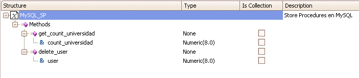
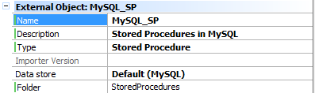
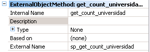
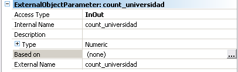

A Stored Procedure (SP) of External object (EO) type stores all the information (name, parameters, etc.) about how to access a set of stored procedures located in a DBMS. In this type of EO several methods with their corresponding parameters can be defined. Each method maps to a Stored Procedure defined in the DBMS.  PropertiesExternal Object
Methods
Parameters
UsageSuppose we’ve created an SP of EO type called MySQL_SP and we’ve defined a MySQL_SP variable called &mysps. Then, in our code we can do the following:
Event 'Count'
&mysps.get_count_universidad(&count)
msg(&count.ToString())
EndEvent
count_universidad is the internal name given to the stored procedure sp_count_universidad; in the parameter, it loads the entry number of the University table of my DB. Notes
Event 'Stored'
&mysps.insertData()
commit
EndEvent
DeploymentWhen the application is deployed, take into account that if the SP(s) are running in an iSeries DB2, the gx400dcl.exe (.net) or crtjdbccalls.class (java) files must be executed to declare them. See SAC #26620 for more details. CompatibilityIt is possible to call Stored Procedures as it was done in previous versions; that is: RestrictionsThere are some complex data types that are not supported. For example:
When the Stored Procedure returns a Recordset data type, GeneXus doesn't provide a compatible data type to map it. Null value as an argument for a stored procedure method is not supported. Stored Functions (Oracle) are not supported; use Stored Procedures with InOut or Out parameters. |
| Backlinks | |
| Category:External object | Specification Codes from spc0100 to spc0149 |